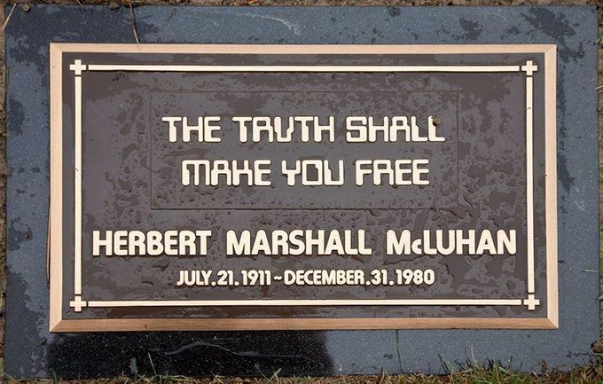
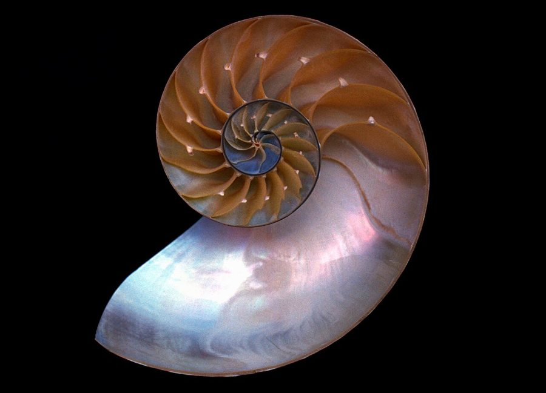

> CASEFILE — the great sock vanishing
Every laundry cycle, exactly one sock escapes. Working hypotheses:
- Dryer Dimension — pocket universe behind the lint trap; only accepts mismatched footwear.
- Sock Migration — reunite under the couch with the remote and one Lego.
- Fashion Underground — rogue socks refuse to pair on principle.
- Quantum Laundry — observing the sock collapses the waveform into “missing.”
Mitigation: label both socks with matching spiral stickers. Spiral energy remains strong.
> FACT — wombats poop CUBES
Bare-nosed wombats leave cube-shaped droppings (~80–100/night) stacked on rocks so they don’t roll. Intestine stiffness gradients (Yang, Hu et al.) squeeze flat sides — 2019 Ig Nobel Prize in Physics.
> FACT — Marshall McLuhan · grave · tetrad

Herbert Marshall McLuhan (1911–1980) was a Canadian media theorist who taught that the medium is the message — the form of a technology reshapes society more than the content it carries. He coined “the global village,” advised on TV-era culture, and treated media as environments you live inside, not pipes you send memos through.
His four laws of media (the tetrad) ask of every tech:
- Enhance — What does it amplify or intensify?
- Obsolesce — What does it push aside?
- Retrieve — What older pattern does it bring back?
- Reverse — What happens when it is pushed to extreme?
Example sketch for smartphones: enhance access & presence; obsolesce paper maps and landlines; retrieve the village gossip network at planetary scale; reverse into distraction, surveillance, and always-on anxiety. The grave plaque’s line — the truth shall make you free — reads differently when the medium that delivers “truth” is the thing rewriting your nervous system.
[ ENHANCE ]──▶[ OBSOLESCE ]
▲ │
│ ▼
[ REVERSE ]◀──[ RETRIEVE ]
> METER
Socks: 3 · Wombat cubes: 4 · McLuhan: 1 · Spirals: 2 · Layout chaos: dialed back to square (Cycle 4)
